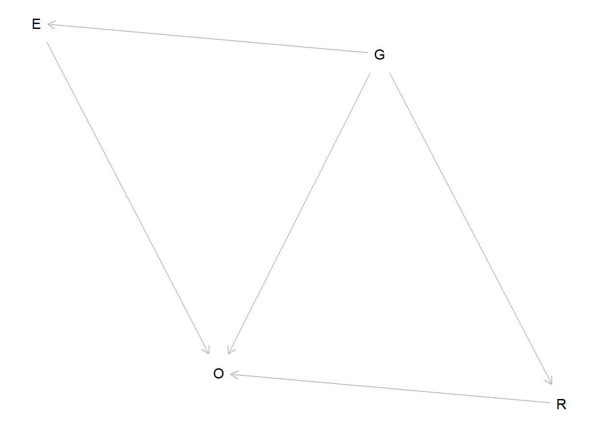
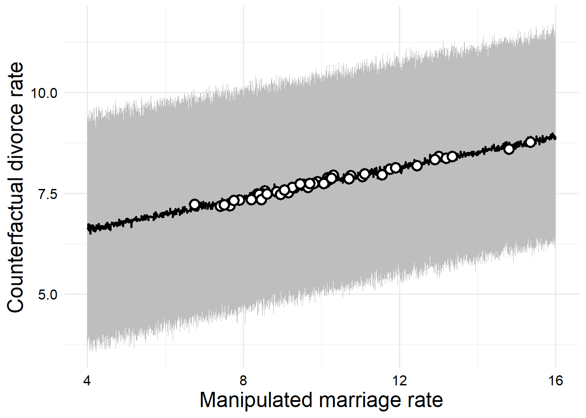
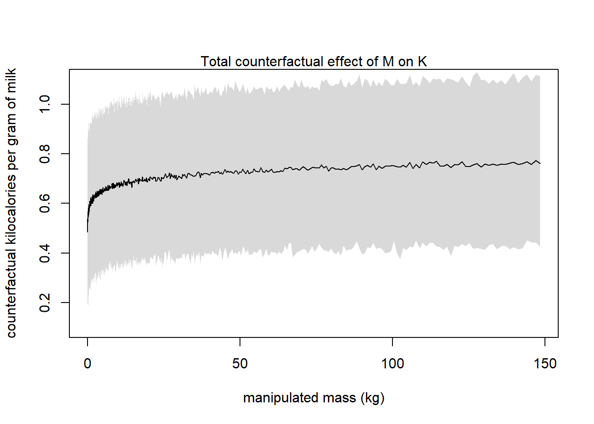

Chapter 5: The Many Variables and the Spurious Waffles
Author
Zane Billings
Published
2022-06-22
This chapter discusses the “causal salad” issue that is really prevelant in epidemiology (and other sciences) right now. When you “adjust” for variables in models, what are you actually doing? What answers can you get from adjusting? How do you decide what variables should go into a model? We get to talk about confounding, which is one of my favorite subjects, and more generally, other types of biases. These are presented in the framework of graphical causal models using directed acyclic graphs (DAGs).
Chapter notes
This chapter is mainly concerned with the issue of confounding, although it doesn’t used the same technical terms that I learned in my epidemiology classes.
Specifically, we are concerned with spurious associations (positive confounding) where a third variable causes the relationship between two variables to appear stronger than it is;
And with masked relationships (negative confounding), where a third variable causes the relationship between two variables to appear weaker than it is.
This chapter also introduces Directed Acyclic Graphs (DAGs) as heuristic graphical causal models for understanding the causal relationships between variables.
The conditional independencies of DAGs are disccused, which are statements of which variables should be associated with each other in the data or not, given that the DAG is an accurate causal model. DAGs with the same variables and implied conditional independencies are called Markov Equivalent.
This chapter also discusses three ways to visualize the results of a regression model: predictor residual plots, posterior prediction plots, and counterfactual plots. In this case, the counterfactual plot does not necessarily mean what I am used to it meaning, it just means we are predicting values which may not have been observed using the model (so in some sense they are counterfactual to our observed data).
Finally, this chapter also discusses categorical variables and index coding, which is used by the rethinking package (and later by Stan) rather than the dummy coding used by most R models.
are both multiple regression models. The first model \[\mu_i = \alpha + \beta x_i\] is a simple linear regression model and while the third model \[\left( \mu_i = \alpha + \beta (x_i - z_i) \right)\] involves both \(x\) and \(z\), the model only has one coefficient and treats their difference as a single explanatory variable.
5E2
We could evaluate the claim animal diversity is linearly related to latitude, but only after controlling for plant diversity using the linear model \[\begin{align*}
\text{animal diversity}_i &\sim \mathrm{Likelihood}\left( \mu_i \right) \\
\mu_i &= \alpha + \beta_1 \left( \mathrm{latitude} \right) + \beta_2 \left( \text{plant diversity} \right)
\end{align*}\]
where suitable priors are assigned and other appropriate parameters are given for the likelihood function.
5E3
We could evaluate the claim neither amount of funding nor size of laboratory is by itself a good predictor of time to PhD degree; but together these variables are both positively associated with time to degree using the multiple linear regression \[\begin{align*}
\text{time to PhD}_i &\sim \mathrm{Likelihood}\left( \mu_i \right) \\
\mu_i &= \alpha + \beta_1 \left( \text{amount of funding} \right) + \beta_2 \left( \text{size of laboratory} \right)
\end{align*}\]
with suitable priors, etc. The slope of both \(\beta_j\) should be positive. Classically, I would probably be inclined to include an interaction term in this model, but we haven’t talked about that yet in the book so I didn’t.
5E4
If we have a single categorical variable with levels \(A,\)\(B,\)\(C,\) and \(D,\) (represented as indicator variables), the following linear models are inferentially equivalent: \[\begin{align*}
\mu_i &= \alpha + \beta_A A_i + \beta_B B_i + \beta_D D_i, \\
\mu_i &= \alpha + \beta_B B_i + \beta_C C_i + \beta_D D_i, \\
\mu_i &= \alpha_A A_i + \alpha_B B_i + \alpha_C C_i + \alpha_D D_i, \quad \text{ and }\\
\mu_i &= \alpha_A \left( 1 - B_i - C_i - D_i \right) + \alpha_B B_i + \alpha_C C_i + \alpha_D D_i.
\end{align*}\]
5M1
An example of a spurious correlation: I am happy on days when it is sunny outside, and when I get to leave work early. Both of these things individually make me happy, but the weather doesn’t determine whether I get to leave work early. (At least not fully anyways. The weather definitely determines how much work I get done, but other external factors control the amount of work I have and the deadlines I need to meet.)
5M2
An example of a masked relationship that I like: supposed you have multiple measurements of how far the accelerator is pressed in a car and the car’s speed (taken simultaneously) at multiple time points, and you see no correlation. However, you are then given the measurements of the slope of the road at each of those time points, and you see that, when the slope of the road is taken into account, the two variables are correlated. When the car is going uphill, the accelerator is always pressed further and the speed is always lower, but pressing the accelerator still increases the speed.
5M3
I guess a higher divorce rate could cause a higher marriage rate by making more people available to be married. If divorced people tend to get remarried (potentially to non-divorced people), then the overall marriage rate could go up. Addressing this using a multiple linear regression model would be quite difficult, as you would need more data on remarriage and divorce status. It could be difficult to incorporate remarriages into the regression model, maybe an agent-based model would be more intuitive for this.
5M4
I found this list of percent LDS population by state. So if we want to add this as a predictor to the divorce rate model, first I’ll join these data to the WaffleDivorce data from the rethinking package.
Rows: 50 Columns: 4
── Column specification ────────────────────────────────────────────────────────
Delimiter: ","
chr (1): State
dbl (3): mormonPop, mormonRate, Pop
ℹ Use `spec()` to retrieve the full column specification for this data.
ℹ Specify the column types or set `show_col_types = FALSE` to quiet this message.
library(rethinking)
Loading required package: cmdstanr
This is cmdstanr version 0.8.1.9000
- CmdStanR documentation and vignettes: mc-stan.org/cmdstanr
- CmdStan path: C:/Users/Zane/.cmdstan/cmdstan-2.34.1
- CmdStan version: 2.34.1
A newer version of CmdStan is available. See ?install_cmdstan() to install it.
To disable this check set option or environment variable cmdstanr_no_ver_check=TRUE.
Loading required package: posterior
This is posterior version 1.6.0
Attaching package: 'posterior'
The following objects are masked from 'package:stats':
mad, sd, var
The following objects are masked from 'package:base':
%in%, match
Loading required package: parallel
rethinking (Version 2.40)
Attaching package: 'rethinking'
The following object is masked from 'package:stats':
rstudent
When I tried to do this the first time, it turns out that the WaffleDivorce dataset has D.C. in it, but not the state of Nevada? And the table of percent LDS populations I found has Nevada, but not D.C. So I just googled it, and on the Wikipedia page I saw that the percentage was 0.38% in 2014, which is good enough for government work, so I filled it in manually. I didn’t transform any of the predictors, but standardizing and transforming them would probably be a good idea. I think a logit transformation would probably be suitable for the percent LDS population but as long as quap() converges I won’t worry about it too much.
where \(i\) indexes the states. Since the outcome is in units of divorces per 1000 people, I decided to let the intercept be anything from 0 to 1000 people. It will probably be quite small but that shouldn’t be too much of a problem I think. Then, I assigned weakly uninformative priors to the slope coefficients and a simple positive prior to the standard deviation. It would be better to do a prior predictive simulation and figure out some better assumptions. Now we’ll fit th model with quap (quadratic approximation).
set.seed(100)fit_5m4 <- rethinking::quap(flist =alist( D ~dnorm(mu, sigma),# We could rewrite this so we didn't have to write out all the identical# priors but this is easier and I am lazy mu <- b0 + bM * M + bA * A + bL * L, b0 ~dunif(0, 100), bM ~dnorm(0, 10), bA ~dnorm(0, 10), bL ~dnorm(0, 10), sigma ~dexp(0.5) ),data = dat_5m4_l )rethinking::precis(fit_5m4)
We can see that for every one percentage increase in the LDS population of a state, the model predicts that the divorce rate will decrease by -0.07 units. Since the divorce rate is in percentage units, this means we would need slightly less than a 15% increase in LDS population for a state’s divorce rate to decrease by 1%.
This estimate is probably biased by Utah, which is a strong outlier with 63% LDS population (far more than the second highest state, Idaho, with 24% of the population identifying as LDS).
5M5
For this exercise, I’ll call the price of gas \(G\), obesity \(O\), exercise \(E\), and eating at restaurants \(R\). The dag for this hypothesis looks like this.
dag <- dagitty::dagitty("dag { G -> E G -> R G -> O E -> O R -> O }")plot(dagitty::graphLayout(dag))

Therefore, \(G\) confounds the relationship of \(E\) on \(O\) and also confounds the relationship of \(R\) on \(O\). (The direct causal effect of \(G\) on \(O\) represents the total impact of any other pathways that we have not measured.) We could capture both of these pathways simultaneously with the multiple regression \[\mu_i = \alpha + \beta_E E_i + \beta_R R_i + \beta_G G_i,\] where \(\mu_i\) is the conditional mean of \(O_i\). This model “controls for” the price of gas, and additionally controls for the effect of \(E\) and \(R\) on each other. If we are certain that \(E\) and \(R\) are related only though \(G\), we could fit the two regression models \[\mu_i = \alpha + \beta_E E_i + \beta_G G_i\] and \[\mu_i = \alpha + \beta_R R_i + \beta_G G_i.\] Using these two models, we control for the effect of gas price and obtain the direct causal effect of \(E\) and \(R\), assuming that \(E\) and \(R\) do not affect each other at all.
5H1
Assuming the DAG for the divorce problem is \(M \to A \to D\). The DAG only has one conditional independency: \(D\) and \(M\) are uncorrelated if we condition on \(A\). We can check this using dagitty as well.
dag2 <- dagitty::dagitty("dag {M -> A -> D}")dagitty::impliedConditionalIndependencies(dag2)
D _||_ M | A
Now we can check if the data are consistent with this DAG. (We already know that it is, because this is the same conditional independency set as one of the previous example DAGs).
d <- WaffleDivorce |> dplyr::select(D = Divorce,M = Marriage,A = MedianAgeMarriage ) |> dplyr::mutate(dplyr::across(tidyselect::everything(), standardize))# Fit the model without age so we can see the unconditional estimatemodel_noage <- rethinking::quap(flist =alist( D ~dnorm(mu, sigma), mu <- a + bM * M, a ~dnorm(0, 0.2), bM ~dnorm(0, 0.5), sigma ~dexp(1) ),data = d )# Fit the model with age onlymodel_ageonly <- rethinking::quap(flist =alist( D ~dnorm(mu, sigma), mu <- a + bA * A, a ~dnorm(0, 0.2), bA ~dnorm(0, 0.5), sigma ~dexp(1) ),data = d )# Fit the model with age to see the estimate after conditioningmodel_5h1 <- rethinking::quap(flist =alist( D ~dnorm(mu, sigma), mu <- a + bM * M + bA * A, a ~dnorm(0, 0.2), bM ~dnorm(0, 0.5), bA ~dnorm(0, 0.5), sigma ~dexp(1) ),data = d )coeftab_plot(coeftab(model_noage, model_ageonly, model_5h1),par =c("bA", "bM"))
We can see that before we add age to the model, the effect of marriage is quit large. But then when we condition on age, the effect is close to zero with a large amount of uncertainty. So it appears that our data are consistent with the conditional independencies of the model. The coefficient for age does not change when we condition it on marriage rate, so this supports our conclusion.
5H2
Assuming that this is the true DAG for the divorce example, we want to fit a new model and estimate the counterfactual effect of halving a state’s marriage rate \(M\).
set.seed(100)m_5h2 <- rethinking::quap(flist =alist(## M -> A A ~dnorm(mu_A, sigma_A), mu_A <- b0_A + bM * M, b0_A ~dnorm(0, 0.2), bM ~dnorm(0, 0.5), sigma_A ~dexp(1),## A -> D D ~dnorm(mu_D, sigma_D), mu_D <- b0_D + bA * A, b0_D ~dnorm(0, 0.2), bA ~dnorm(0, 0.5), sigma_D ~dexp(1) ),data = d )rethinking::precis(m_5h2)
# Get the halved marriage rate for each state and standardize to model unitswith( WaffleDivorce, M_seq <<-c( ((Divorce /2) -mean(Divorce)) /sd(Divorce), d$D ))sim_dat <-data.frame(M = M_seq)s <-sim(m_5h2, data = sim_dat, vars =c("A", "D"))res <- s |># stack the matrix columns on top of each other into one vectorlapply(as.vector) |> tibble::as_tibble() |> dplyr::mutate(M =rep(M_seq, each =nrow(s$A)) )res_diff <- tibble::tibble(A = s$A[, 2] - s$A[, 1],D = s$D[, 2] - s$D[, 1] )test <-lapply(s, \(x) tibble::tibble(mean =colMeans(x[, 51:100] - x[, 1:50]),lwr =apply(x[, 51:100] - x[, 1:50], 2, rethinking::PI)[1, ],upr =apply(x[, 51:100] - x[, 1:50], 2, rethinking::PI)[2, ] ))test2 <- test$Dtest2 <-cbind(test2, WaffleDivorce)library(ggplot2)ggplot(test2, aes(y = forcats::fct_reorder(Location, mean),x = mean, xmin = lwr, xmax = upr)) +geom_pointrange() +scale_x_continuous(labels =function(x) scales::label_number()((x *sd(WaffleDivorce$Divorce))) ) +labs(x ="Counterfactual effect on divorce rate of halving marriage rate (mean, 89% CI)",y =NULL ) + hgp::theme_ms()
From the precis, we can derive that for every 1 unit increase in the marriage rate, we expect \(\beta_M\) units of change in the median age of marriage, and thus \(\beta_A \beta_M\) units of change in the divorce rate, which works out to approximately \((-0.69)(-0.57) = 0.3933\). So if the marriage rate increases by 1 standard deviation, we expect the divorce rate to increase by about 0.4 standard deviations.
We could also (much more easily, in fact, I just didn’t think about it until after I did this the hard way) compute the counterfactual effect for a range of values, and then look up whatever we wanted. The divorce rate measurements in the original data are only measured to the nearest tenth, so we just need to simulate the counterfactual effect of every one-tenth unit change in divorce rate over the range of observed rates.
# Generate the sequenceM_seq <-seq(from =4,to =16,by =0.01 )# Restandardize it using the original values for model unitsM_seq <- (M_seq -mean(WaffleDivorce$Marriage)) /sd(WaffleDivorce$Marriage)# Do the simulationsim_dat <-data.frame(M = M_seq)s <-sim(m_5h2, data = sim_dat, vars =c("A", "D"))# Clean up the resultsD_res <- tibble::tibble(M =round(M_seq *sd(WaffleDivorce$Marriage) +mean(WaffleDivorce$Marriage),digits =2),mean =colMeans(s$D),lwr =apply(s$D, 2, rethinking::PI)[1, ],upr =apply(s$D, 2, rethinking::PI)[2, ] ) |> dplyr::mutate( dplyr::across(c(mean, lwr, upr), \(x) x *sd(WaffleDivorce$Divorce) +mean(WaffleDivorce$Divorce) |>round(digits =2)) )manipulated <- WaffleDivorce |> dplyr::transmute( Location, Loc, M = Marriage /2, orig = Marriage, out = Divorce ) |> dplyr::left_join(D_res, by ="M")# Make the plotD_res |>ggplot(aes(x = M, y = mean, ymin = lwr, ymax = upr)) +geom_ribbon(fill ="gray") +geom_line(size =0.75) +geom_point(data = manipulated,fill ="white",color ="black",shape =21,stroke =1.5,size =3 ) +labs(x ="Manipulated marriage rate",y ="Counterfactual divorce rate" ) + hgp::theme_ms()
Warning: Using `size` aesthetic for lines was deprecated in ggplot2 3.4.0.
ℹ Please use `linewidth` instead.

# manipulated |># dplyr::mutate(id = factor(dplyr::row_number())) |># ggplot() +# geom_segment(# aes(x = orig, xend = M, y = out, yend = mean, color = id),# show.legend = FALSE,# alpha = 0.5# ) +# geom_point(# aes(x = M, y = mean, shape = "Counterfactual", fill = id),# size = 3, color = "black"# ) +# geom_point(# aes(x = orig, y = out, shape = "Observed", fill = id),# size = 3, color = "black"# ) +# guides(# fill = guide_none()# ) +# scale_shape_manual(values = c(21, 22)) +# labs(# x = "Marriage rate",# y = "Divorce rate"# ) +# hgp::theme_ms()
There we go. The white points here show each of the states if their divorce rate were halved (and the model is true). I didn’t label them because I had already spend too much time on this project. There’s a lot more I could think of to do on this problem, but instead I decided to move on to the next one instead.
5H3
We are given the following DAG for the milk energy problem.
dag3 <- dagitty::dagitty("dag {K <- M -> N -> K}")
We want to compute the counterfactual effect on K of doubling M, accounting for both the direct and indirect paths of causation.
data("milk")m <- milk |> dplyr::transmute(N =standardize(neocortex.perc),M =standardize(log(mass)),K =standardize(kcal.per.g) ) |> tidyr::drop_na()m_5h3 <- rethinking::quap(flist =alist(# M -> N N ~dnorm(mu_n, sigma_n), mu_n <- a_n + b_m * M, a_n ~dnorm(0, 0.2), b_m ~dnorm(0, 0.5), sigma_n ~dexp(1),# M -> K <- N K ~dnorm(mu_k, sigma_k), mu_k <- a_k + b_m * M + b_n * N, a_k ~dnorm(0, 0.2), b_n ~dnorm(0, 0.5), sigma_k ~dexp(1) ),data = m )rethinking::precis(m_5h3)
In this case, the predictor we want the counterfactual effect of (\(M\)) is on a log scale, so we should be able to get the effect of halving it (since changes will be proportional on a multiplicative scale). But I’m not sure I formally understand what the “total counterfactual effect” is well enough to do that. So I’ll simulate instead.
# Sequence in log unitsM_seq <-seq(from =-3, to =5, by =0.01)# Standardize with original values to model unitsM_seq <- (M_seq -mean(log(milk$mass), na.rm =TRUE)) /sd(log(milk$mass), na.rm =TRUE)# Simulate the predictionssim_dat <-data.frame(M = M_seq)s <-sim(m_5h3, data = sim_dat, vars =c("N", "K"))plot_data <- tibble::tibble(M =exp(sim_dat$M *attr(m$M, "scaled:scale") +attr(m$M, "scaled:center")),K =colMeans(s$K) *attr(m$K, "scaled:scale") +attr(m$K, "scaled:center") )plot_PI <-apply(s$K, 2, PI) *attr(m$K, "scaled:scale") +attr(m$K, "scaled:center")# Plot the counterfactual effectplot( plot_data$M, plot_data$K,type ="l",xlab ="manipulated mass (kg)", ylab ="counterfactual kilocalories per gram of milk",xlim =exp(c(-3, 5)),ylim =c(0.1, 1.1))shade(plot_PI, plot_data$M)mtext("Total counterfactual effect of M on K")

Again, the question didn’t say what number to double, but you can get any of them from a simulation like this.
5H4
This is an open-ended problem where we will consider how to add the indicator of being in the South to the marriage problem. There are a few possibilities for the causal implications of this.
Something about Southerness directly affects age at marriage, marriage rate, and divorce rate all at the same time. (Or divorce rate, and one of the two predictors) That is, Southerness has both direct and indirect effects on divorce rate.
Something about Souttherness directly affects age at marriage and marriage rate, having only indirect effects on divorce rate. Alternatively, Southerness only impacts one of these two variables.
Something about Southernness directly affects divorce rate, with no indirect effects.
My first instinct is to say that age at marriage and marriage rate are primarily influenced by socioeconomic factors. Due to multiple historical factors (including slavery and an enduring legacy of systemic racism), the southern US, on average, has lower education rates and higher poverty rates as a region. Increased socioeconomic status tends to be associated with higher age of marriage, but a higher marriage rate and lower divorce rate (according to what I read while googling this).
However, the southern U.S. also has a unique subculture (which varies widely across regions of the south), which could be a sociological cause of differences in some of these variables. For example, I think it is reasonable to say that traditional Southern culture encourages women to marry young, and also encourages women to get married in general – there is definitely a stereotype about older, unmarried women in traditional Southern culture.
So, based on both the socioeconomic reasons and the “culture” argument, there are two models I would like to examine. First, the model that posits a direct effect of Southerness on divorce rate, as well as indirect effects on both age at marriage and marriage rate. Then, I’d also like to examine the model where there is no direct effect of Southerness on divorce rate, and Southerness acts on divorce rate via age at marriage and marriage rate.
Let’s examine the model with no direct effects first. We’ll consider the conditional independencies of this DAG.
dag_indirect <- dagitty::dagitty("dag {M <- S -> A; D <- M -> A; A -> D}")plot(dag_indirect)
Plot coordinates for graph not supplied! Generating coordinates, see ?coordinates for how to set your own.
So, if the data are consistent with this DAG, then the divorce rate should be independent of being in the South after we control for age at marriage and marriage rate. So let’s fit a model that does that. Since Southern status is an indicator variable, I wasn’t quite sure how to handle it in this model. In a frequentist framework, I would probably want to include an interaction term – this was briefly mentioned at the beginning of this chapter, but has not been covered in detail so I’ll just use a simple additive-effects-only model for now.
But first let’s consider the conditional independencies of the DAG with direct effects.
dag_direct <- dagitty::dagitty("dag {M <- S -> A; D <- M -> A; A -> D; S -> D}")plot(dag_direct)
Plot coordinates for graph not supplied! Generating coordinates, see ?coordinates for how to set your own.
There are no conditional independencies for this graph! So we should expect to see a relationship for all three parameters in the model that conditions on all three of our predictor variables.
Fortunately for us, we can use the same model to evaluate both of these DAGs – we just need to see which of the conditional independencies are supported by the result of predicting \(D\) using all three of them.
d <- WaffleDivorce |> dplyr::transmute(D =standardize(Divorce),M =standardize(Marriage),A =standardize(MedianAgeMarriage),S = South )m_s_only <- rethinking::quap(flist =alist( D ~dnorm(mu, sigma), mu <- a + bS * S, a ~dnorm(0, 0.2), bS ~dnorm(0, 0.5), sigma ~dexp(1) ),data = d )m_m_only <- rethinking::quap(flist =alist( D ~dnorm(mu, sigma), mu <- a + bM * M, a ~dnorm(0, 0.2), bM ~dnorm(0, 0.5), sigma ~dexp(1) ),data = d )m_a_only <- rethinking::quap(flist =alist( D ~dnorm(mu, sigma), mu <- a + bA * A, a ~dnorm(0, 0.2), bA ~dnorm(0, 0.5), sigma ~dexp(1) ),data = d )m_all <- rethinking::quap(flist =alist( D ~dnorm(mu, sigma), mu <- a + bM * M + bA * A + bS * S, a ~dnorm(0, 0.2), bM ~dnorm(0, 0.5), bA ~dnorm(0, 0.5), bS ~dnorm(0, 0.5), sigma ~dexp(1) ),data = d )rethinking::precis(m_all)
mean sd 5.5% 94.5%
a -0.07590505 0.10600330 -0.245318792 0.0935087
bM -0.04224048 0.14778943 -0.278436533 0.1939556
bA -0.56163739 0.15090185 -0.802807694 -0.3204671
bS 0.34998019 0.21572095 0.005216455 0.6947439
sigma 0.76290395 0.07580295 0.641756198 0.8840517
So, interestingly, from the estimated coefficients, we see that the coefficient for being in the South does not change that much when we control for both of the other variables. Of course, the CI crosses zero in the new model, so if we were doing bad statistics we would say that the effect has disappeared, but it was significant in the S-only model, which means that there is no direct effect of S. Since we are not doing bad statistics though, it seems unreasonable to claim that – there appears to be an effect of both \(A\) and \(S\) in the final model.
Recall our previous model which was consistent with the idea that marriage rate only impacts divorce rate through the effect of age of marriage. So another potential DAG is like this.
dag_med <- dagitty::dagitty("dag {M <- S -> A -> D; M -> A ->; S -> D}")plot(dag_med)
Plot coordinates for graph not supplied! Generating coordinates, see ?coordinates for how to set your own.
So the only casual independency of this DAG is whether D is independent of M after controlling for A and S, and after fitting our previous model we see that the data are consistent with this DAG. Arguably the data are not consistent with the other DAGs since those DAGs do not have any conditional independencies involving M, but the best model should still be chosen by a domain expert, not based on what the data are consistent with after observing the data.